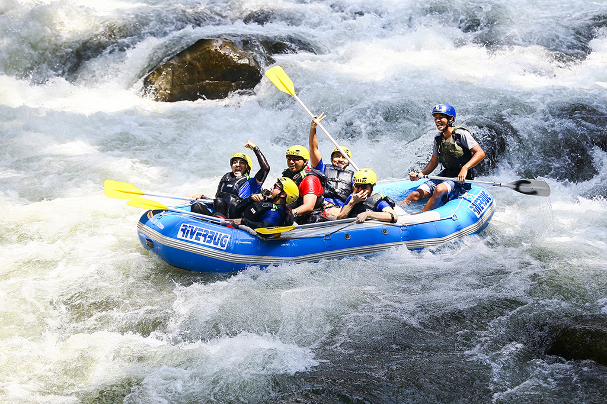

Purpose: To make sure that you get a remarkable experience as you try out rafting on these waters!
Mission: To provide wholesome and transparent Water rafting services to our customers
Creed: At White Water Rafting Ug, our commitment is clearly to our customers' safety, to protect the nature, the waters that we love, to provide a unique trip to each of our unique customers, to bring people together, on and off the water and to create that one remarkable experienceful adventure for you!
Motto: Memento Momentum, Memento Mortem!
White Water Rafting Ug
History
Since 1972, White Water Rafting Ug. has been the leading company along the River Nile that has provided the most outstanding servicesto both local and international customers. The company won the people's Choice Award in 7 different years in 1974, 
adventure Awaits You!


